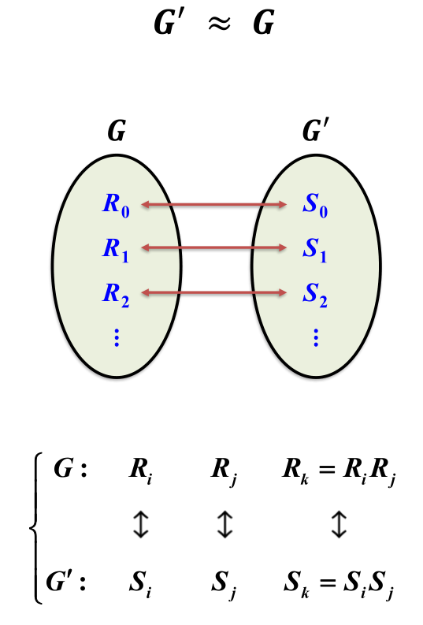
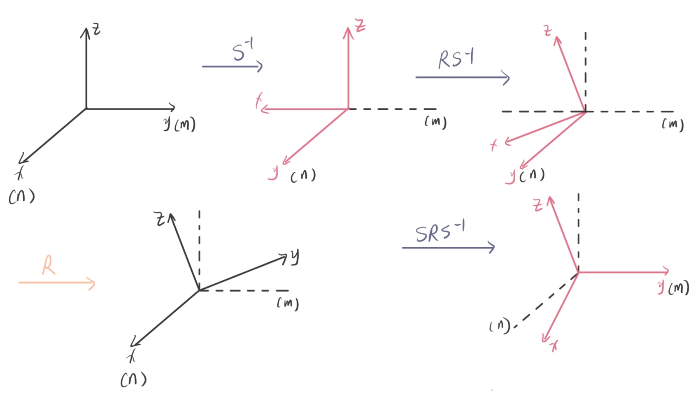
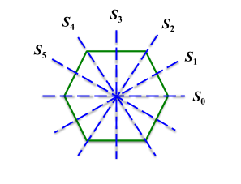
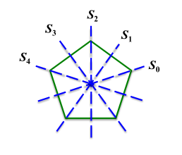
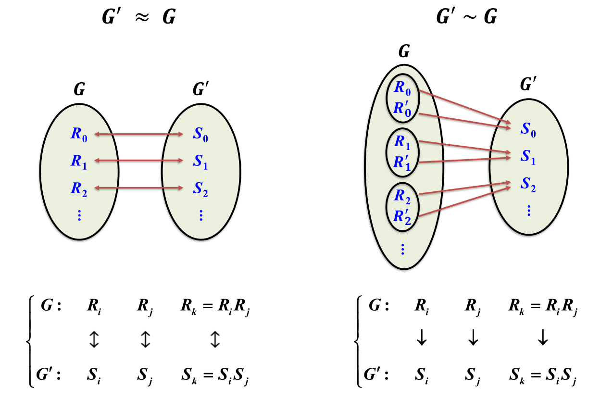

群论
群的基本概念
群及其乘法表
-
群的定义
- 封闭性
- 结合律
- 左恒元
- 左逆元
-
循环群及其生成元
- $C_n = {E,R,R^2,\cdots,R^{n-1}}$，其中$R^n=E$
-
有限群的生成元和秩
- 元素的周期：$\forall R \in G,R^n =E$，集合${E,R^1,R^2,\cdots,R^{n-1}}$为元素的周期 .
- 有限群的生成元：有限群的群元素可以由最小数目个群元素的乘积生成 ， 这些最小数目个群元素 .
- 有限群的秩：有限群生成元的个数 .
-
有限群重排定理
-
复元素：有限群部分元素的集合看作一个整体 ${R_1,R_2,\cdots,R_m}$.
-
有限群重排定理：$\forall T\in G={E,R,S,\dots}$，则$TG = GT=G^{-1}=G$，
其中
$$ TG=\{TE,TR,TS,\cdots\}~,\quad G^{-1} = \{E,R^{-1},S^{-1},\cdots\}~. $$
-
同构
-
同构：$G\approx G’$，
- 指群$G$与$G^\prime$所有元素都按某种规则存在一一对应关系，它们的群乘积也按同一规则一一对应；
- 两个群之间存在保持元素乘积不变的一一对应满映射；
- $\forall g_1,g_2 \in G$ 存在对应的 $ g_1^\prime,g_2^\prime \in G^\prime,g_1\leftrightarrow g_1^\prime,g_2\leftrightarrow g_2^\prime,\Rightarrow g_1 g_2 \leftrightarrow g_1^\prime g_2^\prime$ .
- 
- 传递性：若$G\approx G^\prime,G^\prime\approx G^{\prime\prime};\Rightarrow G\approx G^{\prime\prime} $.
有限群乘法表
- 对于$RS = T$，$R$为列（左乘元素），$S$为行（右乘元素），$T$为$R$行$S$列对应的元素，如图

群的各种子集
-
子群：$H\subseteq G$仍然满足群的定义，则$H$为群$G$的子群；
- 判断是否为子群验证封闭性即可 .
-
陪集
-
左陪集：$\forall R_j \in G $且$R_j \notin H$，群$G$的左陪集为$R_j H$;
-
右陪集：$\forall R_j \in G $且$R_j \notin H$，群$G$的左陪集为$HR_j$;
-
两个有公共元素的左陪集必然全相同;
-
子群$H$的阶为$h$，则有限群$G$一定可以分解为子群$H$和若干个左陪集$R_j H$的并集，且子集间没有公共元素，每个自己包含$h$个不同元素：
$$ G=H\cup R_2 H\cup R_3H\cup\cdots\cup R_d H~. $$
-
-
拉格朗日定理：$g = nh$，其中$g$为群$G$的阶数，$n$为子群$H$的指数.
- 阶数为素数的群没有非平庸子群，除恒元外所有元素的阶都是该素数，该群是循环群.
-
共轭元素与类
-
对于$\forall S \in G,R^\prime = SRS^{-1}$与$R$为互相共轭的元素 .
-
对于$\forall S,T\in G$有
$$ R^\prime = SRS^{-1},R^{\prime\prime} = TRT^{-1} = TS^{-1}R^\prime ST^{-1} = (TS^{-1})R^\prime (TS^{-1})^{-1} $$
-
-
类：所有相互共轭的元素构成的集合，$n_\alpha$为$C_\alpha$中所包含的元素数目
-
$C_\alpha = {R_k |R_k = SR_jS^{-1},\forall S\in G}$ .
-
$\forall S,T\in G$，则$ST$与$TS$共轭，$ST =STSS^{-1}=S(TS)S^{-1}$ .
-
两个类没有公共元素；
-
除恒元以外，类不是子群；
-
对于$R_k = SR_jS^{-1}\in C_\alpha$，
-
$\forall S\in G$，$R_j$遍历$C_\alpha$时不会重复，即$SC_\alpha S^{-1}=C_\alpha$；
-
$\forall R_j \in C_\alpha$，$S$遍历$G$会有重复，每个元素$R_k$重复次数为$g/n_\alpha$，其中$g$为群$G$的阶.
-
群$G$（可以证明）存在一个子群$H = {E,T_1,T_2,\cdots,T_h}$其每个元素都与$R_j$对易$T_iR_j = R_jT_i$，其同样具有性质$T_i^{-1}R_j=R_jT_i^{-1}$，那么$R_k$的重复次数就是子群$H$的阶$h$.
由于$T_iR_jT_i^{-1}, R_k=(ST_i)R_j(ST_i)^{-1}, R_k^\prime=(S^\prime T_i)R_j(S^\prime T_i)^{-1}$，有$R_j \ne R_k\ne R_k^\prime$ ，那么对于$H$及其每个左陪集$SH$都对应类$C_\alpha$的一个元素，那么$C_\alpha$元素个数$n_\alpha = g/h$，即重复次数为$h=g/n_\alpha$ .
-
-
相逆类：$C_\alpha^{-1} = {R_k^{-1} |R_k^{-1} = SR_j^{-1}S^{-1},\forall S\in G} \ne C_\alpha$，$C_\alpha$与$C_\alpha^{-1}$元素个数相同 .
-
自逆类：$C_\alpha^{-1} = C_\alpha$ .
-
-
-
系统对称变换群的共轭类
-
对称变换指绕通过空间一固定点的轴的转动变换；
-
设$n$方向是系统的$N$次固有转动轴，$R$是绕$n$方向的固有转动轴转动$2\pi /N$角的变换，元素$S$是将$n$方向转到$m$方向，则$SRS^{-1}$是绕$m$方向转动$2\pi /N$角的变换，如果难以理解，请看下图
- 
-
等价轴：两个同次轴的正方向可以通过对称群中的元素联系起来；
-
同次轴：两个转动轴有相同的转动阶次；
-
等价轴一定是同次轴 ， 同次轴不一定等价 。
-
双向轴/非极性轴：一个轴的正反两个方向可以通过对称群中元素联系起来；
-
-
不变子群和商群
-
不变子群/正规子群：$R_j H = H R_j$，子群的所有左陪集和对应的右陪集都相等；
-
Abel群的所有子群都是不变子群；
-
子群的指数$n=g/h=2$的子群一定是不变子群（只有一个陪集）；
-
不变子群由若干个类组成$H = R_j H R_j^{-1}$ .
-
商群：$G/H$，不变子群及其陪集作为复元素的集合，满足群的四个条件构成的群，阶数为子群的指数$n=g/h$ .
-
寻找不变子群的步骤
- 找到所有的共轭类：确定元素阶数，阶数相同的元素是否共轭；
- 把若个类并起来看是否构成一个子群（恒元，阶数，元素周期，封闭性），若是子群则为不变子群.
- 注意：若群$H$为群$G$不变子群，群$H_e$为$H$的不变子群，但$H_e$不一定是$G$的不变子群.
$D_N$群
-
-
$D_N$ 群：正$N$边形对称变换群
-
$1$个$N$次轴，$N$个$2$次轴；
- $N = 2n+1$：顶点和对边中点的连线为二次轴；
- $N = 2n\quad$：两相对顶点和两相对中点的连线为二次轴 .
- 
-
绕$N$次轴转动的对称变换的集合：
$$ C_N\approx\{E,T,T^2,\cdots , T^{N-1} \}~,\quad T^N =E~. $$ -
绕$N$个二次轴转动的对称变换的集合：
$$ \{S_0,S_1,\cdots,S_{N-1} \}\ni S_j~,\quad 0\le j\le N-1~. $$ -
$D_N$ 群的乘法规则
-
-
$D_N$ 群的类
-
$D_3$群的类
-
$D_3$群包含 $1$ 个三次轴和 $3$ 个二次轴;
-
绕二次轴的转动使三次轴是双向轴$F=ADA^{-1}$;
-
绕次轴的转动时$3$个二次轴等价$C = DAD^{-1}$ ;
-
三个自逆类${E},{D,F},{A,B,C}$ .
-
-
$D_4$群的类
-
$D_4$群包含 $1$ 个四次轴和 $4$ 个二次轴;
-
绕二次轴的转动使四次轴是双向轴$T^3 = S_0 T S_0^{-1}$；
-
$S_0,S_2$为等价轴，$S_1,S_3$为等价轴；
-
五个自逆类${E},{T,T^3},{T^2},{S_0,S_2},{S_1,S_3}$ .
-
-
$N=2n$
-
$1$ 个$N$次轴，$N$ 个二次轴；
-
绕二次轴的转动是双向轴，其中${T^m,T^{-m}},(1\le m \le n-1)$构成一类，${T^n}$构成一类；
-
绕$N$个$2$次轴的转动，${S_0,S_2,\cdots,S_{2n-2}}$和${S_1,S_3,\cdots,S_{2n-1}}$分布互相等价，分别构成一类；
-
一共$1+n-1+1+2=n+3$个自逆类（恒元，加上以上$n+2$个类）.
-
-
$N=2n+1$
-
一个$N$次轴，$N$个$2$次轴；
-
$N$次轴是双向轴，${T^m,T^{-m}},(1\le m\le n)$构成一类；
-
$N$个二次轴互相等价，绕二次轴转动的元素构成一类${S_0,S_1,\cdots,S_{2n}}$；
-
一共$n+2$个自逆类（包括恒元）.
-
-
-
$D_N$ 群的不变子群
-
$N=2n$
-
$n+3$个自逆类
$$ \{E\}~,\quad \{T^m,T^{-m}\}(1\le m \le n-1)~,\quad \{T^n\}~,\quad\{S_0,\cdots,S_{2n-2}\}~,\quad \{S_1,\cdots,S_{2n-1}\}~, $$ -
非平庸不变子群
$$ \begin{aligned} &\{E,T^n\},\{E,T,T^2,\cdots,T^{2n-1}\}\text{及其不变子群如}\{E,T^2,T^4,\cdots,T^{2n-2}\}~,... \\ &\{E,T^2,T^4,\cdots,T^{2n-2},S_0,S_2,\cdots,S_{2n-2}\}~, \\ &\{E,T^2,T^4,\cdots,T^{2n-2},S_1,S_3,\cdots,S_{2n-1}\}~. \end{aligned} $$
-
-
$N=2n+1$
-
$n+2$个自逆类
$$ \{E\}~,\quad \{T^m,T^{-m}\}(1\le m \le n)~,\quad \{S_0,S_1\cdots,S_{2n}\}~, $$ -
非平庸不变子群
$$ \{E,T,T^2,\cdots,T^{2n}\}\text{及其不变子群.} $$
-
-


群的同态关系
-
同态：$G^\prime \sim G$，群$G^\prime$与群$G$存在一多对应的关系；
- 
-
同态核定理：对于$G^\prime\sim G$，$G^\prime$恒元$E^\prime\leftrightarrow H\subset G$，子群$H$为群$G$的不变子群，满足$G^\prime \approx G/H$ .
群的直接乘积
- 直积群/直乘群：$G = H_1 \otimes H_2$，
- 其中子群$H_1,H_2$满足
- 除恒元外无公共元素：$H_1 \cap H_2 =E$ ;
- 对易： $\forall R \in H_1,S\in H_2,[R,S] = 0$；
- 群$G$是所有$R_i S_j$构成的集合 .
- 阶：$g=h_1\times h_2$ .
- 直积群类的个数等于两子群类的个数的乘积
- $R^\prime S^\prime = (R_i R R_i^{-1})(S_j S S_j^{-1}) = (R_i S_j)RS (R_i S_j)^{-1} $ .
- 其中子群$H_1,H_2$满足